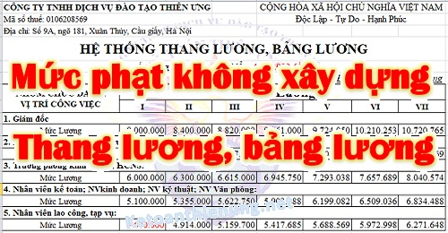

Không xây dựng thang bảng lương có bị phạt không? Quy định về Mức phạt không xây dựng thang bảng lương, định mức lao động, trả lương thấp hơn mức quy định tại thang bảng lương.
Chú ý: Căn cứ theo Điều 93 Bộ luật lao động số 45/2019/QH14 quy định:
"93. Xây dựng thang lương, bảng lương và định mức lao động
1. Người sử dụng lao động phải xây dựng thang lương, bảng lương và định mức lao động làm cơ sở để tuyển dụng, sử dụng lao động, thỏa thuận mức lương theo công việc hoặc chức danh ghi trong hợp đồng lao động và trả lương cho người lao động.
2. Mức lao động phải là mức trung bình bảo đảm số đông người lao động thực hiện được mà không phải kéo dài thời giờ làm việc bình thường và phải được áp dụng thử trước khi ban hành chính thức.
3. Người sử dụng lao động phải tham khảo ý kiến của tổ chức đại diện người lao động tại cơ sở đối với nơi có tổ chức đại diện người lao động tại cơ sở khi xây dựng thang lương, bảng lương và định mức lao động.
Thang lương, bảng lương và mức lao động phải được công bố công khai tại nơi làm việc trước khi thực hiện."
Như vậy: Hiện nay, doanh nghiệp không phải nộp Thang bảng lương cho Cơ quan LĐTBXH như trước đây nữa -> Mà chỉ cần xây dựng thang bảng lương, lưu tại DN nhưng cần chú ý:
- Công bố công khai tại nơi làm việc trước khi thực hiện.
- Lưu tại Doanh nghiệp để khi cơ quan nhà nước yêu cầu thì giải trình.
- Nếu Doanh nghiệp có tổ chức đại diện người lao động tại cơ sở thì Tham khảo ý kiến của tổ chức đại diện người lao động tại cơ sở.
-------------------------------------------------------------------------------------------
Theo Điều 17 Nghị định 12/2022/NĐ-CP quy định mức xử phạt Vi phạm quy định về tiền lương, cụ thể như sau:
Mức phạt không xây dựng thang bảng lương, định mức lao động:
1. Phạt tiền từ 5.000.000 đồng đến 10.000.000 đồng đối với người sử dụng lao động có một trong các hành vi sau đây:
a) Không công bố công khai tại nơi làm việc trước khi thực hiện: thang lương, bảng lương; mức lao động; quy chế thưởng;
b) Không xây dựng thang lương, bảng lương hoặc định mức lao động; không áp dụng thử mức lao động trước khi ban hành chính thức;
c) Không tham khảo ý kiến của tổ chức đại diện người lao động tại cơ sở đối với nơi có tổ chức đại diện người lao động tại cơ sở khi xây dựng thang lương, bảng lương; định mức lao động; quy chế thưởng;
d) Không thông báo bảng kê trả lương hoặc có thông báo bảng kê trả lương cho người lao động nhưng không đúng theo quy định;
đ) Không trả lương bình đẳng hoặc phân biệt giới tính đối với người lao động làm công việc có giá trị như nhau.
=> Cách xây dựng thang bảng lương ... các bạn xem tại đây nhé:
--------------------------------------------------------------------
Mức phạt không trả hoặc trả không đủ tiền lương:
2. Phạt tiền đối với người sử dụng lao động có một trong các hành vi:
- Trả lương không đúng hạn theo quy định của pháp luật;
- Không trả hoặc trả không đủ tiền lương cho người lao động theo thỏa thuận trong hợp đồng lao động;
- Không trả hoặc trả không đủ tiền lương làm thêm giờ;
- Không trả hoặc trả không đủ tiền lương làm việc vào ban đêm;
- Không trả hoặc trả không đủ tiền lương ngừng việc cho người lao động theo quy định của pháp luật;
- Hạn chế hoặc can thiệp vào quyền tự quyết chi tiêu lương của người lao động;
- Ép buộc người lao động chi tiêu lương vào việc mua hàng hóa, sử dụng dịch vụ của người sử dụng lao động hoặc của đơn vị khác mà người sử dụng lao động chỉ định;
- Khấu trừ tiền lương của người lao động không đúng quy định của pháp luật;
- Không trả hoặc trả không đủ tiền lương theo quy định cho người lao động khi tạm thời chuyển người lao động sang làm công việc khác so với hợp đồng lao động hoặc trong thời gian đình công;
- Không trả hoặc trả không đủ tiền lương của người lao động trong những ngày chưa nghỉ hằng năm hoặc chưa nghỉ hết số ngày nghỉ hằng năm khi người lao động thôi việc, bị mất việc làm;
- Không tạm ứng hoặc tạm ứng không đủ tiền lương cho người lao động trong thời gian bị tạm đình chỉ công việc theo quy định của pháp luật;
- Không trả đủ tiền lương cho người lao động cho thời gian bị tạm đình chỉ công việc trong trường hợp người lao động không bị xử lý kỷ luật lao động.
Mức phạt cụ thể như sau:
a) Từ 5.000.000 đồng đến 10.000.000 đồng đối với vi phạm từ 01 người đến 10 người lao động;
b) Từ 10.000.000 đồng đến 20.000.000 đồng đối với vi phạm từ 11 người đến 50 người lao động;
c) Từ 20.000.000 đồng đến 30.000.000 đồng đối với vi phạm từ 51 người đến 100 người lao động;
d) Từ 30.000.000 đồng đến 40.000.000 đồng đối với vi phạm từ 101 người đến 300 người lao động;
đ) Từ 40.000.000 đồng đến 50.000.000 đồng đối với vi phạm từ 301 người lao động trở lên.
2. Phạt tiền đối với người sử dụng lao động có một trong các hành vi:
- Trả lương không đúng hạn theo quy định của pháp luật;
- Không trả hoặc trả không đủ tiền lương cho người lao động theo thỏa thuận trong hợp đồng lao động;
- Không trả hoặc trả không đủ tiền lương làm thêm giờ;
- Không trả hoặc trả không đủ tiền lương làm việc vào ban đêm;
- Không trả hoặc trả không đủ tiền lương ngừng việc cho người lao động theo quy định của pháp luật;
- Hạn chế hoặc can thiệp vào quyền tự quyết chi tiêu lương của người lao động;
- Ép buộc người lao động chi tiêu lương vào việc mua hàng hóa, sử dụng dịch vụ của người sử dụng lao động hoặc của đơn vị khác mà người sử dụng lao động chỉ định;
- Khấu trừ tiền lương của người lao động không đúng quy định của pháp luật;
- Không trả hoặc trả không đủ tiền lương theo quy định cho người lao động khi tạm thời chuyển người lao động sang làm công việc khác so với hợp đồng lao động hoặc trong thời gian đình công;
- Không trả hoặc trả không đủ tiền lương của người lao động trong những ngày chưa nghỉ hằng năm hoặc chưa nghỉ hết số ngày nghỉ hằng năm khi người lao động thôi việc, bị mất việc làm;
- Không tạm ứng hoặc tạm ứng không đủ tiền lương cho người lao động trong thời gian bị tạm đình chỉ công việc theo quy định của pháp luật;
- Không trả đủ tiền lương cho người lao động cho thời gian bị tạm đình chỉ công việc trong trường hợp người lao động không bị xử lý kỷ luật lao động.
Mức phạt cụ thể như sau:
a) Từ 5.000.000 đồng đến 10.000.000 đồng đối với vi phạm từ 01 người đến 10 người lao động;
b) Từ 10.000.000 đồng đến 20.000.000 đồng đối với vi phạm từ 11 người đến 50 người lao động;
c) Từ 20.000.000 đồng đến 30.000.000 đồng đối với vi phạm từ 51 người đến 100 người lao động;
d) Từ 30.000.000 đồng đến 40.000.000 đồng đối với vi phạm từ 101 người đến 300 người lao động;
đ) Từ 40.000.000 đồng đến 50.000.000 đồng đối với vi phạm từ 301 người lao động trở lên.
Xem thêm: Cách tính lương làm thêm giờ tăng ca
----------------------------------------------------------------------------------------
Mức phạt trả lương thấp hơn lương tối thiểu vùng:
- Mức phạt từ 20.000.000 đồng đến 75.000.000 đồng tùy thuộc vào số người lao động.
=> Chi tiết xem tại đây nhé:
------------------------------------------------------------------------------------------------
4. Phạt tiền đối với người sử dụng lao động khi có hành vi không trả hoặc trả không đủ cùng lúc với kỳ trả lương một khoản tiền cho người lao động tương đương với mức người sử dụng lao động đóng bảo hiểm xã hội bắt buộc, bảo hiểm y tế, bảo hiểm thất nghiệp cho người lao động không thuộc đối tượng tham gia bảo hiểm xã hội bắt buộc, bảo hiểm y tế, bảo hiểm thất nghiệp theo quy định của pháp luật theo một trong các mức sau đây:
a) Từ 3.000.000 đồng đến 5.000.000 đồng đối với vi phạm từ 01 người đến 10 người lao động;
b) Từ 5.000.000 đồng đến 8.000.000 đồng đối với vi phạm từ 11 người đến 50 người lao động;
c) Từ 8.000.000 đồng đến 12.000.000 đồng đối với vi phạm từ 51 người đến 100 người lao động;
d) Từ 12.000.000 đồng đến 15.000.000 đồng đối với vi phạm từ 101 người đến 300 người lao động;
đ) Từ 15.000.000 đồng đến 20.000.000 đồng đối với vi phạm từ 301 người lao động trở lên.
----------------------------------------------------------------------------------------------------
5. Biện pháp khắc phục hậu quả:
a) Buộc người sử dụng lao động trả đủ tiền lương cộng với khoản tiền lãi của số tiền lương chậm trả, trả thiếu cho người lao động tính theo mức lãi suất tiền gửi không kỳ hạn cao nhất của các ngân hàng thương mại nhà nước công bố tại thời điểm xử phạt đối với hành vi vi phạm quy định tại khoản 2, khoản 3 Điều này;
b) Buộc người sử dụng lao động trả đủ khoản tiền tương đương với mức đóng bảo hiểm xã hội bắt buộc, bảo hiểm y tế, bảo hiểm thất nghiệp cộng với khoản tiền lãi của số tiền đó tính theo mức lãi suất tiền gửi không kỳ hạn cao nhất của các ngân hàng thương mại nhà nước công bố tại thời điểm xử phạt cho người lao động đối với hành vi vi phạm quy định tại khoản 4 Điều này.
--------------------------------------------------------------------
CHÚ Ý:- Mức phạt tiền quy định đối với các hành vi vi phạm quy định trên đây là mức phạt đối với cá nhân. Mức phạt tiền đối với tổ chức bằng 02 lần mức phạt tiền đối với cá nhân.
(Căn cứ theo khoản 1 điều 6 Nghị định 12/2022/NĐ-CP)
----------------------------------------------------------------------------------------------
Kế toán Diệu Tâm xin chúc các bạn thành công!
-----------------------------------------------------------------------
-----------------------------------------------------------------------
